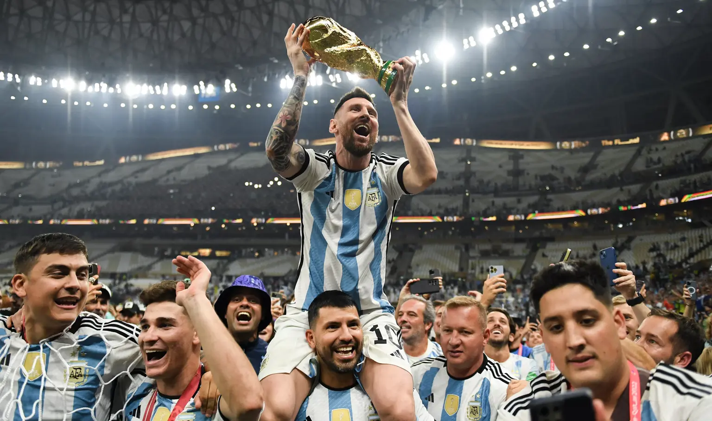
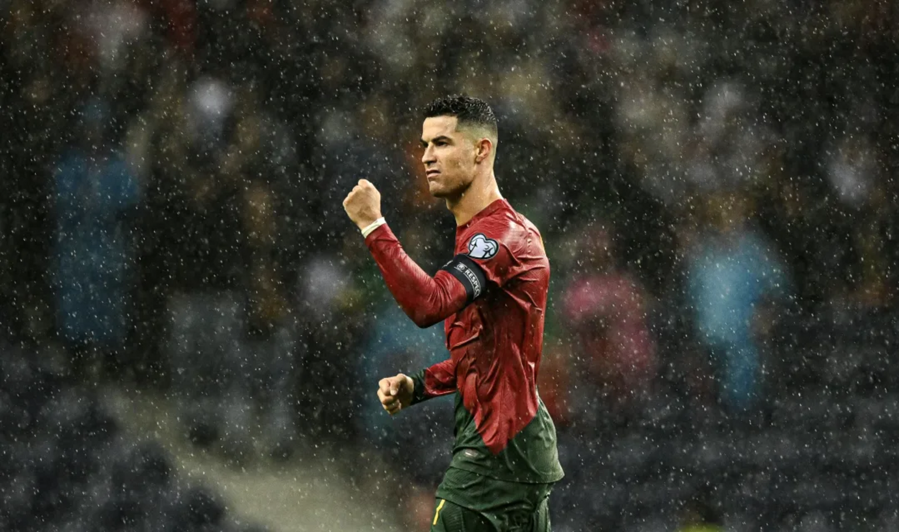

Beautiful Game
Football, often hailed as the "beautiful game," holds a unique position in the global sporting landscape, captivating millions with its blend of athleticism, skill, and drama. Originating in 19th-century England, football quickly spread across the world, transcending cultural and geographical boundaries to become a unifying force for communities far and wide. Its simplicity – a ball, a pitch, and two sets of goalposts – belies the complexity and excitement it generates. From the streets of Rio de Janeiro to the stadiums of Barcelona, the passion for football knows no bounds, bringing together people from diverse backgrounds in celebration of their shared love for the sport.
The pinnacle of football's allure lies in events like the FIFA World Cup, where nations come together every four years to compete for glory on the grandest stage of all. These tournaments not only showcase exceptional athletic prowess but also serve as a platform for cultural exchange and unity. Iconic clubs such as Real Madrid, Barcelona, and Manchester United have become household names, commanding legions of devoted fans who live and breathe the successes and failures of their teams. Through its ability to inspire, entertain, and connect, football has cemented its status as more than just a game – it's a global phenomenon that enriches lives and transcends generations.

|

|